matplotlib.colormaps['Dark2']
plot_cmap_collections
plot_cmap_collections (cmap_collections:str|list[str]=None)
Plot all color maps in the collections passed as cmap_collections
| Type | Default | Details | |
|---|---|---|---|
| cmap_collections | str | list[str] | None | list of color map collections to display (from cmaps.keys()) |
The following color map collections are defined:
- Cyclic
- Diverging
- Miscellaneous
- Perceptually Uniform Sequential
- Qualitative
- Sequential
- Sequential (2)plot_cmap_collections will plot a color bar for each color map in the selected collections:
- A single collection
plot_cmap_collections('Cyclic')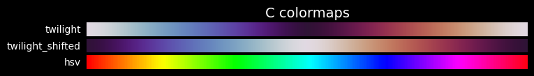
- Several collections
plot_cmap_collections(['Qualitative', 'Sequential'])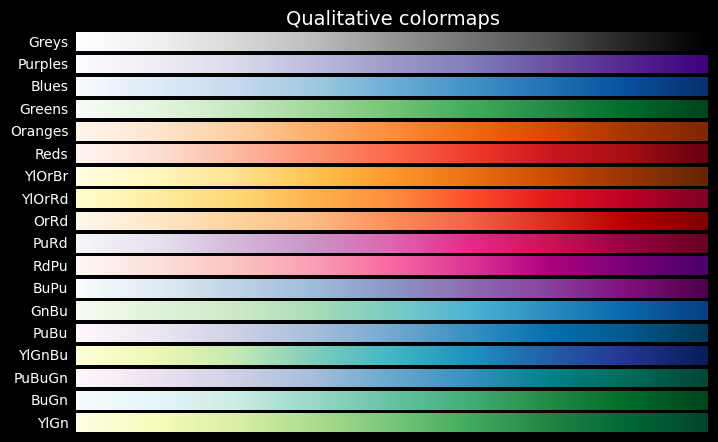
- All the collections
plot_cmap_collections()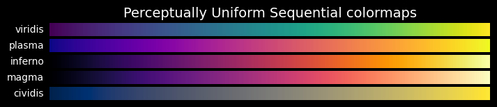
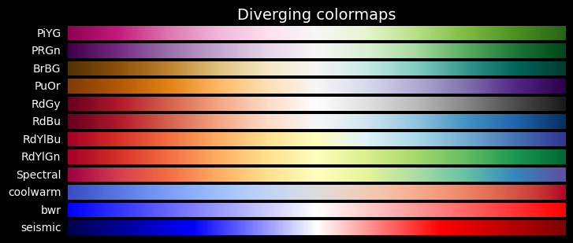
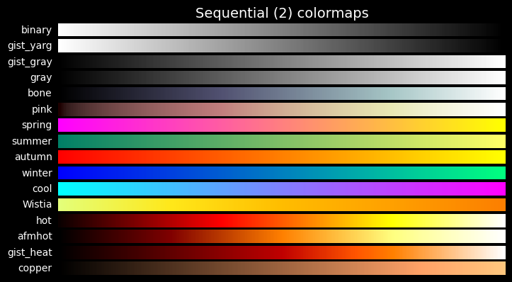
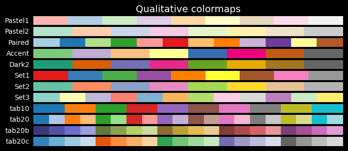
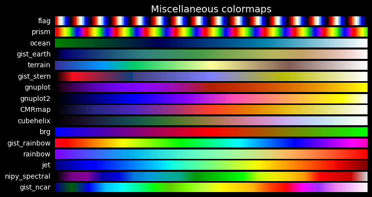
plot_color_bar
plot_color_bar (cmap:str, series:list[typing.Union[int,float]]=None)
Plot a color bar with value overlay from series based on cmap
| Type | Default | Details | |
|---|---|---|---|
| cmap | str | string name of one of the cmaps | |
| series | list | None | series of numerical values to show for each color |
plot_color_bar('tab10', range(10))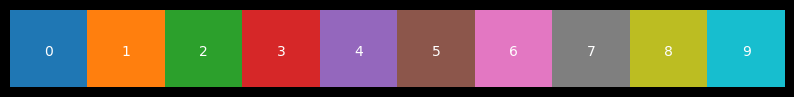
plot_color_bar('tab10', series=range(6))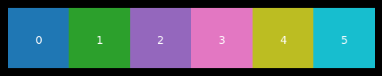
plot_color_bar('tab10', series=[0, 1, 2])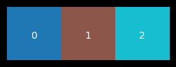
get_color_mapper
get_color_mapper (series:list[typing.Union[int,float]], cmap:str='tab10')
Return color mapper based on a color map and a series of values
| Type | Default | Details | |
|---|---|---|---|
| series | list | series of values to map to colors | |
| cmap | str | tab10 | name of the cmap to use |
Usage
This function is used to ensure coherent colors for different plots.
- Define a color mapper based on values and cmap:
clr_mapper = get_color_mapper([1, 2, 3, 4], cmap='Paired) - Call the color mapper and have it return the appropriate values for any plot:
clr_mapper.to_rgba(2)
Example
Let’s take a dataset \((X,y)\), generated by sklearn using make_blob for 5,000 samples with 6 features each and grouped in 10 centers. The \(X\) and \(y\) are saved as npy file
import pandas as pd
with open('data-dev/ten-blobs-6-cols-X.npy', 'rb') as fp:
X = np.load(fp)
with open('data-dev/ten-blobs-6-cols-y.npy', 'rb') as fp:
y = np.load(fp)
n_feats = X.shape[1]
col_list = [f"col_{i}" for i in range(n_feats)]
X = pd.DataFrame(X, columns=col_list)
X.head(3)| col_0 | col_1 | col_2 | col_3 | col_4 | col_5 | |
|---|---|---|---|---|---|---|
| 0 | 8.714921 | 0.580067 | 6.817529 | -4.891837 | -0.418419 | -4.127050 |
| 1 | -0.322263 | -3.901781 | -8.588875 | 1.114151 | 4.908420 | -2.475176 |
| 2 | -7.798702 | -4.276232 | -1.145314 | -6.619232 | -9.232606 | 6.994045 |
1. Define a color mapper based on values and cmap
We have clustered the 5,000 sample of \(X\) into 10 clusters (saved into a clusters.npy file)
Now we want to make a scatter plot of two of the features, displaying the 10 cluster using a cmap.
To ensure that we can keep the same cluster color mapping for other plots, we use clr_mapper to predefine how colors are mapped to each cluster:
clr_mapper = get_color_mapper(cluster_ids, cmap=cmap).
# Load clustered data from the blobs
with open('data-dev/ten-blobs-6-cols-clusters.npy', 'rb') as fp:
clusters = np.load(fp)
cluster_ids = np.unique(clusters)
cluster_idsarray([0, 1, 2, 3, 4, 5, 6, 7, 8, 9], dtype=int32)cmap='tab10'
fig, (ax1, ax2) = plt.subplots(nrows=1, ncols=2, figsize=(14, 3))
im1 = ax1.scatter(X.col_0, X.col_1, c=clusters, s=2, cmap=cmap)
ax1.set_title('2 first features, colored by cluster value')
fig.colorbar(im1)
im2 = ax2.scatter(X.col_4, X.col_5, c=clusters, s=2, cmap=cmap)
ax2.set_title('2 last features, colored by cluster value')
fig.colorbar(im2)
plt.show()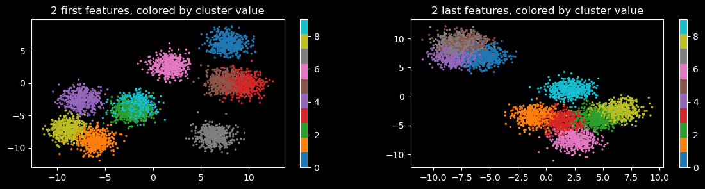
clr_mapper = get_color_mapper(cluster_ids, cmap=cmap)Call the color mapper and use it in any plot
Use for another plot, showing another feature, and its value for each sample, colored according to its cluster
featname = 'col_4'
plt.figure(figsize=(12, 3))
plt.plot(X[featname], c='grey', alpha=.66, lw=0.25)
plt.title(f'{featname}.')
plt.show()
plt.figure(figsize=(12, 3))
plt.plot(X[featname], c='grey', alpha=.5, lw=0.1)
for c in cluster_ids:
mask = y == c
X[f"{featname}_{c}"] = X.loc[:, featname]
X.loc[~mask, f"{featname}_{c}"] = np.nan
plt.plot(X[f"{featname}_{c}"], label=str(c), c=clr_mapper.to_rgba(c), lw=0, marker='o', markersize=1)
plt.title(f'{featname}. Data points colored according to the cluster it belongs to.')
plt.legend()
plt.show()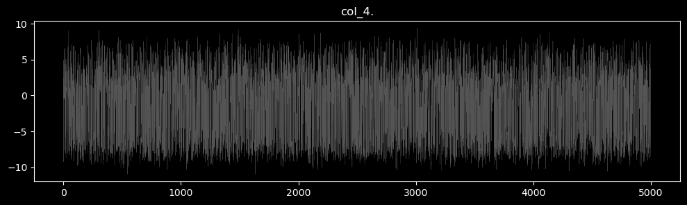
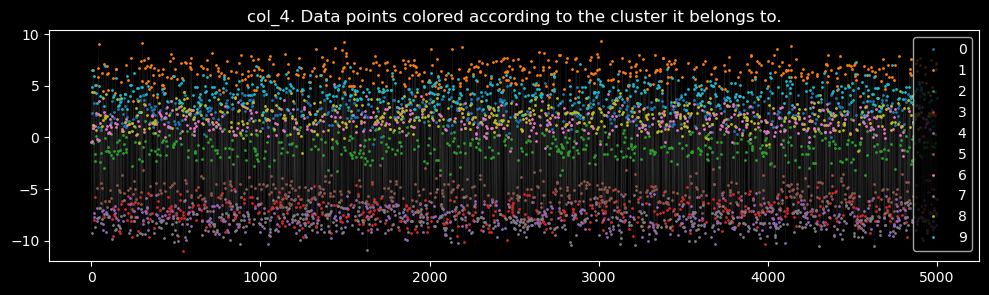